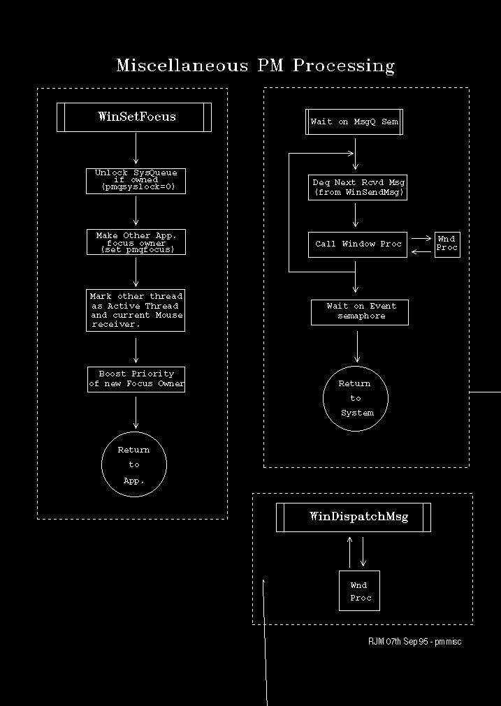

WinSetFocus has a subtle bearing on message processing since it selects a new active thread and new current input receivers for system messages.
Note:
Focus may be changed by a third party.
These are the essential steps in WinSetFocus processing:
pwndfocus points to the WND of the focus owner.
The MQ of the current system queue owner is pointed to by pmqsyslock. This is set to zero if it points to the MQ of the current focus owner.
pmqfocus is set to the address of the new focus owner's MQ.
pmqMouseWake and pmqKeyWake are set to the address of the new focus owner's MQ.
This processing is illustrated in the following diagram: